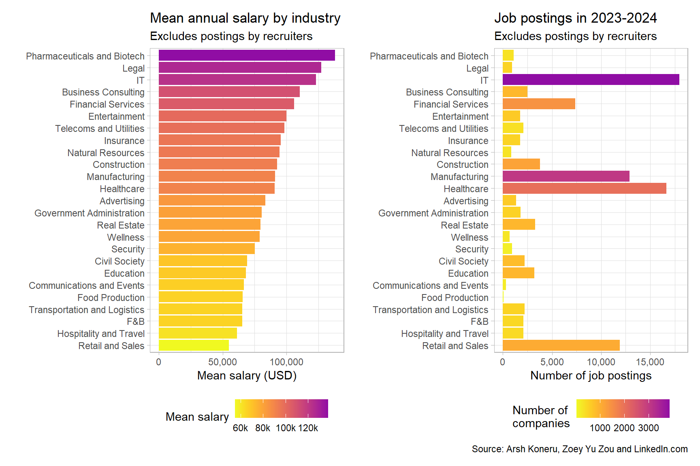
Linkedin postings
Part one
Introduction
We’re looking at another set of scraped data today. This time, over 124,000 LinkedIn job postings over 2023-2024 were scraped by Arsh Koneru and Zoey Yu Zou.
The scrapers retrieved the most recent job postings in relation to the 48-hour period during which their scraping script was run. I think retrieving jobs based on recency provides a fair sample of the jobs on LinkedIn.
The main limitation is then that LinkedIn is not representative of the job market. 53% of LinkedIn users earn more than USD 100,000 a year and 54% of LinkedIn users are university graduates.
Additionally, for many of the analyses below, we have filtered out jobs posted by recruiters and middlemen, since it’s not possible to tell which company of or industry they are from. Postings by recruiters make up 16.4% of the dataset.
Overview by industry
Looking at the five largest industries by number of job postings, we can confirm several things that we already likely know from cultural osmosis: IT is a large and well-compensated industry. Healthcare and Manufacturing, whilst having many new jobs, have middling salaries, on average. There are a large number of poorly-compensated retail jobs.
Financial services have been dethroned by IT as the most “premium” industry – likely because the financialisation and securitisation of everything means that all industries are now over-commodified, not just finance.
With reference to the plot above, IT, Healthcare, Manufacturing, Retail and Financial Services posted 65.6% of all jobs. The lowest salaries, overall, can be found in the Retail and Hospitality industries.
Job categories
Let’s add a column for job categories. Whilst the dataset does already have a column for formatted experience level, this data is lacking for 23% of all postings. I also find LinkedIn’s categories somewhat lacking in definition and not distinctive enough.
So, instead of the six categories (Internship, Entry-level, Associate, Mid-Senior level, Executive and Director) provided by LinkedIn, we now have fifteen. Whilst my categorisation is admittedly imperfect, we have managed to cut down jobs in the “Other” category from 23% to 11%. Further refinement is possible, but there are diminishing returns to wading through that many layers of corporate obfuscation and doublespeak.
A cursory inspection, plotted below, shows that my categorisation has been commonsensical.
Directors, Engineers, Licensed Professionals and Managers earn the most. This lines up with our expectations and we will use these job categories in the later sections when we talk about “good jobs”.
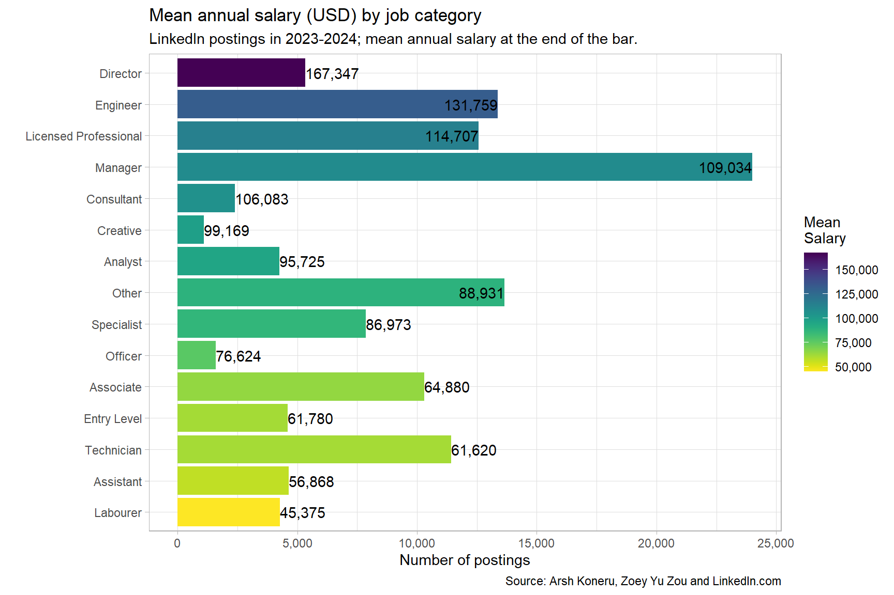
White-collar jobs continue to pay more than blue-collar ones: Technicians, on average, still earn less than Associates and Entry-level jobs.
Middle management jobs are the most commonly posted category on LinkedIn.
The rarest category of jobs are Creatives. But, unlike what your parents told you, they are reasonably compensated. These jobs are just very scarce in comparison to the number of Arts and Communications graduates that exist.
Which industries have the most ‘good jobs’?
IT, Pharmaceuticals and the Legal industry have the highest proportions of good jobs, with more than 50% of jobs posted being for Managers, Licensed Professionals, Engineers and Directors. The industries which are seeking to hire the highest proportions of Licensed Professionals are, unsurprisingly, the Healthcare and Legal industries.
As we will look at later, Pharmaceuticals, Entertainment and Advertising have the highest proportion of director/senior-level postings.
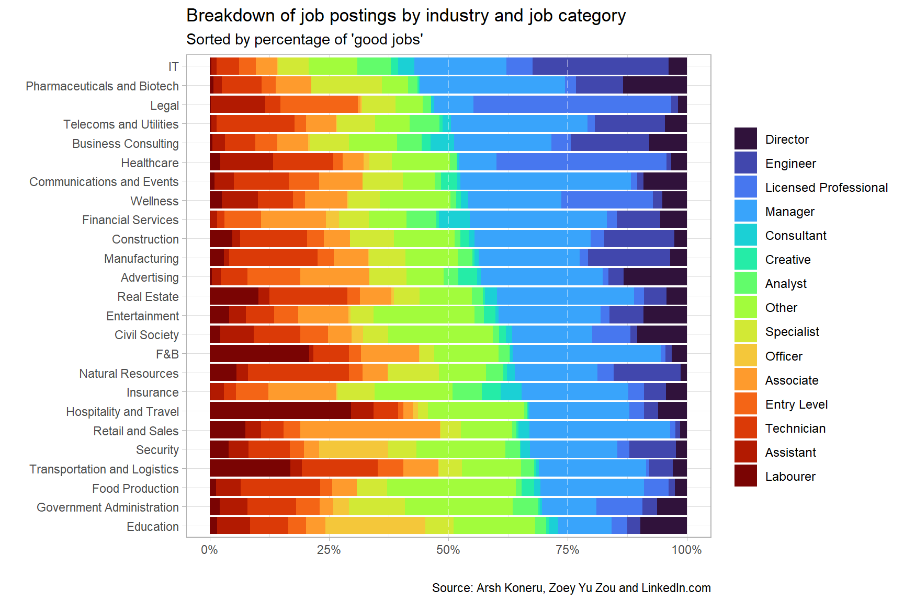
Hospitality and F&B have the highest proportion of low-skilled labourer jobs. And Retail and Natural Resources the lowest proportions of director-level jobs.
Education and Government Administration seem to be dying. And given that this data was scraped before DOGE and the great sack of the American government, these industries likely have an even worse proportion of good jobs now.
Job applications
Let’s take a look next at the breakdown of job applications.
Almost a quarter of job applications in Hospitality and Civil Society were for the limited director-level roles.
Possibly, only more senior candidates in the Hospitality industry use LinkedIn, or that requirements for director-level positions in the Hospitality industry are not as stringent as other industries. Or it could also be due to the Hospitality industry having the second lowest pay amongst all industries, turning people away from the less remunerated positions.
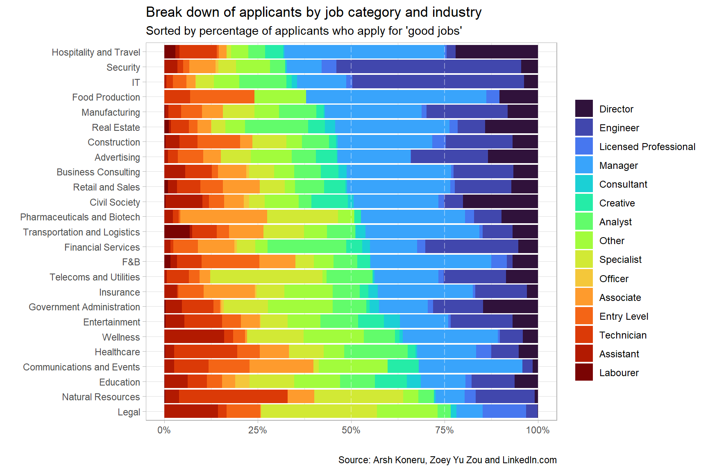
Let’s next take a look at the most oversubscribed and undersubscribed job categories. The plots below show the job categories and industries which have the lowest and highest number of jobs per applicant.
The most oversubscribed job categories are Analysts and Engineers, followed by Creatives. This likely speaks to the glut of coders, programmers and mid-range professionals across all industries, as well as the relatively small number of Creative jobs compared to the people who are interested in them.
The most undersubscribed jobs are Labourers and Officers (across all industries), as well as Licensed Professionals in Healthcare, Wellness and in the Government. As talent and money continue to be funnelled towards IT and Financial Services, there is, perhaps, a lessened desire to pursue more strenuous professional certifications when you can just earn more by coding or engaging in market manipulation.
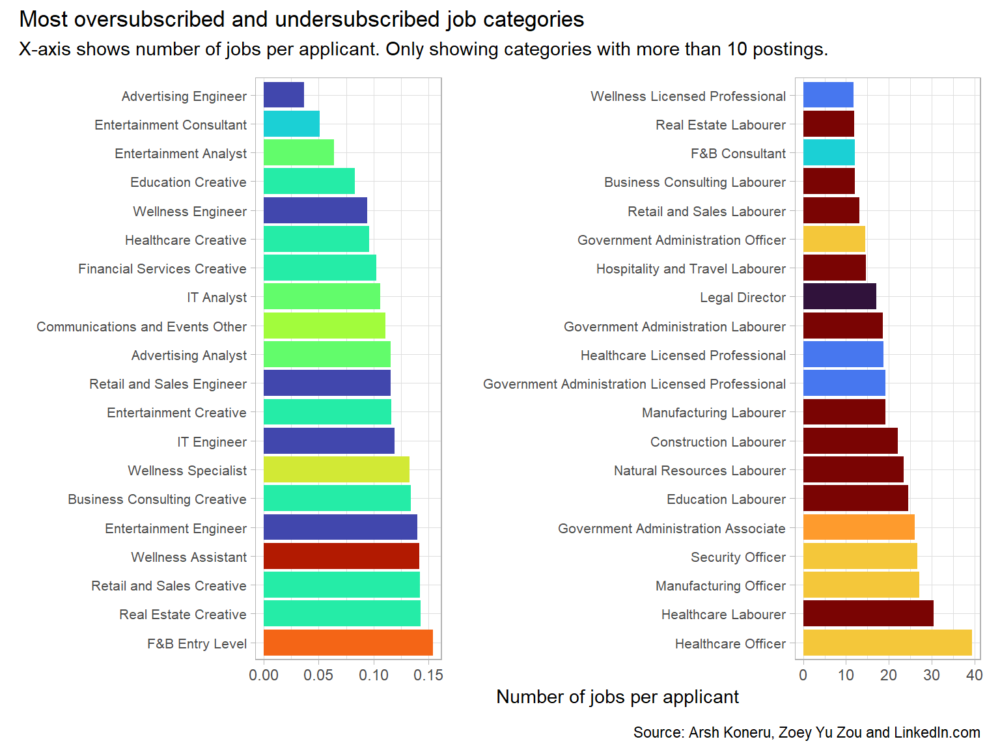
Most top-heavy industries
The true inequality exists in the gulf between capitalists and workers. But that’s not what LinkedIn is about, though it is a symptom of the disease.
Nevertheless, at the risk of undermining worker solidarity, let us look at how staffing budgets are broken down between different job categories.
In the plot below, we have pro-rated the mean salary per job category per industry by the number of postings.
Advertising, Pharmaceuticals and Biotech and Communications and Events pay out around 25% of salaries of their advertised jobs just to directors. We’ll take a closer look below, since we’re all probably getting Theranos flashbacks.
In Pharmaceuticals, IT and the Legal industry, around 70% of the ‘staff budget’ is dedicated towards Directors, Engineers, Licensed Professionals and Managers.
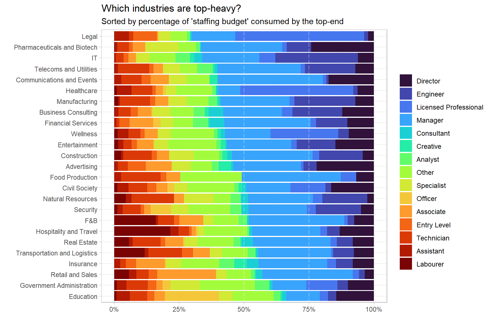
Taking a closer look at Pharmaceuticals and Advertising, we can see a pattern that I first noticed in Civil Society. In what I have termed Bifurcated Industries or Bifurcated Companies, we see that some of the top-heaviness comes from leadership in these industries needing to govern two or more complex functions.
In the case of Civil Society, you need directors for field operations and fundraising (“development”, as in business development). In Advertising, you need account directors and creative directors. And in Pharmaceuticals, you have research, manufacturing and sales.
| Advertising | Pharmaceuticals and Biotech | Civil Society |
|---|---|---|
| Director, Marketing Automation & Operations | Senior Director, Transplant Software & Solutions – Strategic Business Segment | Volunteer: Regional Director |
| Sales Director | Director, Medical Writing | Executive Director |
| Account Director | Vice President, Safety | Director of Development |
| Art Director | Associate Director of Global Marketing - Multiple Myeloma | Human Resources Director |
| Associate Director, Project Management | Associate Director, Biostatistics | Chief Development Officer |
| Group Account Director | Associate Director, Clinical Trial Oversight | Chief Financial Officer |
| Associate Creative Director | Associate Director, Statistical Programming | Director of Communications |
| Associate Creative Director, Copywriter | MSL Director, East | Director of Philanthropy |
| Associate Media Director | Accounting, Associate Director | Field Director |
| Chief Marketing Officer | Area Sales Director - IgG4 (Central) - Rare Disease - Amgen | Vice President of Development |
| Chief Technology Officer | Area Sales Director - IgG4 (Northeast) - Rare Disease - Amgen | Aquatics Director |
| Director, Client Services | Area Sales Director - IgG4 (Southeast) Rare Disease - Amgen | Chief Executive Officer |
| Director, Commerce | Area Sales Director - IgG4 (West) Rare Disease - Amgen | Director of Firearm Suicide Prevention Policy, Stoneleigh Fellowship (anywhere in PA) |
| Director, eCommerce & Retail | Assoc Director/Director, Clinical Operations | Director of Housing |
| Product Director | Assoc. Director, Strategy and Operations | Director, Next Generation Boards |
As to which of these is the core purpose of these companies, from experience, I’d say that revenue generation always wins. And through gradual erosion, the revenue-generating functions will eventually corrupt and override your core purpose.
I would like to go into further detail, but one of the limitations of the dataset is that LinkedIn, as mentioned, is not the entire job market. Additionally, the ratio of CEO pay to worker pay has already been documented by the AFL-CIO.
Industry consolidation and oligopolies
If you were to search up “Herfindahl-Hirschman Index by industry”, you will find no relevant recent results. Yet corporate mergers and acquisitions continue unabated as the plot below from the Institute of Mergers, Acquisitions and Alliances attests to.
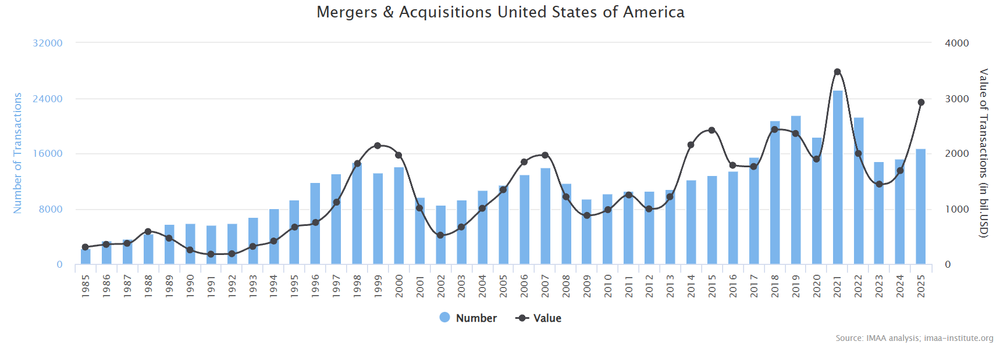
Perhaps this is an indication that the oligopolistic tendencies of the corporate overclass have long gone unchecked and unquestioned, with hard data hidden behind paywalls, away from the general public.
To add our two cents to the topic, with regards to the plot below which shows the percent of jobs posted by just the top 20 largest companies, all industries show signs of oligopoly and excess concentration. Even at the lower-end of the chart, the top 20 IT companies are responsible for an average of 1% of all job postings each. This is a pretty clear sign of overconcentration, even if you ignore the Magnificent Seven’s stranglehold on patents and market capitalisation.
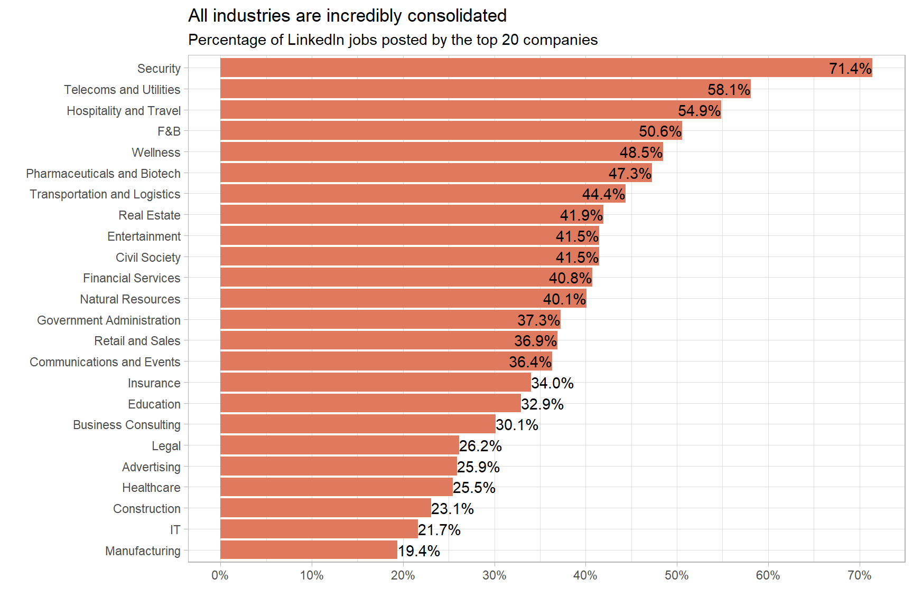
Unsurprisingly, some of the most consolidated industries also have the largest barriers to entry: Security often requires government contacts, weapons and the murder of indigenous groups and minorities; Telecoms and utilities require massive investment in infrastructure; and Hospitality requires land plots in convenient locations for hotels.
But we also see excess consolidation where the barriers to entry are lower: food manufacturing can often occur at a smaller scale. Opening a gym or spa requires a much lower level of investment than opening a hotel. Yet F&B and Wellness are also extremely consolidated, with around 50% of jobs being posted by just 20 companies.
| Industry | Company | % of jobs posted |
|---|---|---|
| Security | DNV | 18.54 |
| Security | Securitas Security Services USA, Inc. | 17.01 |
| Security | GardaWorld | 5.45 |
| Security | Federal Bureau of Prisons - Career Connections | 3.38 |
| Security | U.S. Army MWR | 2.73 |
| Telecoms and Utilities | Cogent Communications | 22.75 |
| Telecoms and Utilities | Spectrum | 7.70 |
| Telecoms and Utilities | Comcast | 4.97 |
| Telecoms and Utilities | Lumen Technologies | 2.82 |
| Telecoms and Utilities | AT&T | 2.63 |
| Hospitality and Travel | Aimbridge Hospitality | 12.40 |
| Hospitality and Travel | Hyatt Hotels Corporation | 5.24 |
| Hospitality and Travel | Vacasa | 4.18 |
| Hospitality and Travel | Hyatt Regency | 4.08 |
| Hospitality and Travel | Sonesta Hotels | 3.03 |
| F&B | PepsiCo | 7.24 |
| F&B | Barcadia Bar & Grill | 5.29 |
| F&B | Raising Cane's Chicken Fingers | 5.10 |
| F&B | Sysco | 4.57 |
| F&B | Performance Foodservice | 4.52 |
| Wellness | Life Time Inc. | 10.06 |
| Wellness | ATI Physical Therapy | 5.47 |
| Wellness | Ageility | 3.85 |
| Wellness | PedIM Healthcare | 3.70 |
| Wellness | AltaMed Health Services | 3.25 |
Oligopolies create significant inefficiencies, at the expense of the consumer. This was proven by Bruno Pellegrino in his new model, which confirms that the US economy has not only become more oligopolised but also more inefficient, to the detriment of the consumer. The chart below shows that deadweight loss (loss due to economic inefficiency) due to oligopolies has increased substantially over the past two decades:
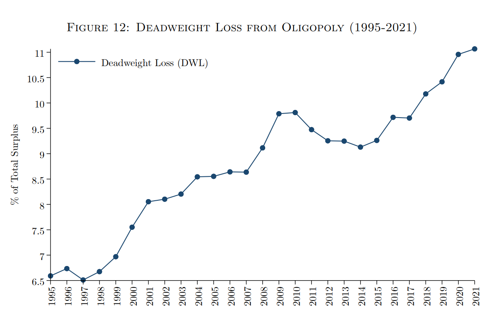
Pellegrino’s model also indicates that higher levels of concentration lead to higher markups, meaning that, as he puts it, “The consumer is losing twice”. Once from higher markups and again from greater deadweight loss.
So, what does this mean for you and me? We have to vote for politicians who are committed to trustbusting, forcing oligopolies to separate and limiting the mobility of capital. Failure to do so, will make warnings about mergers and acquisitions made by Liz Lemon all the more prescient: “What if my favourite brand of spicy chips also sold diarrhoea medication?” We’re now at the stage of Malboro making asthma inhalers.
If only it were just pulling the ladder up behind you.
Appendices
A note on Enshittification
A parallel problem to the oligopolisation of the job marketplace is the enshittification of work and work outputs.
If financialisation is the the increasing role of financial motives, markets, actors and institutions, resulting in “financial intermediaries and technologies [gaining] an unprecedented influence over our lives”, then enshittification is process by which AIs and algorithms, perverse indicators, gamification, and over-optimisation (corner cutting) have reduced and cheapened our lives, resulting in a greater and greater divorce from an increasingly bleak reality.
From the plot below, we see that the industries that are the most digitised (after IT) are, unsurprisingly, Business Consulting, Financial Services, Telecoms and Utilities and Insurance. These are all highly financialised sectors that are known to be at the forefront of change (management) and cross-industry fads. It is commonsensical that they would be the most fervent adopters of AI and Machine Learning.
However, the Entertainment and Advertising industries are also highly “optimised” and engineered, a portent, perhaps, of the incoming wave of AI-generated content.
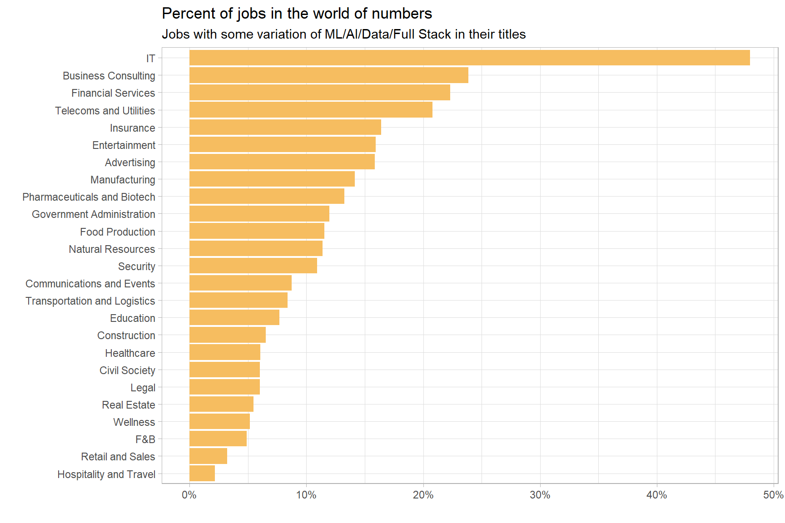
The least tech-forward industry, at least according to new jobs posted, is Hospitality, followed by Retail and F&B. They are the most grounded in the real world. Their enshittification primarily occurs outside of these industries themselves, with middlemen like Trip.com, Agoda, Uber and Doordash undertaking the over-optimisation process on their behalf.
Salaries by industry and job category
Unskilled labour pays the best in Telecoms and Utilities and Natural Resources. Strangely, in Education, Associates are paid slightly more than Teachers (who have been classed as Officers), likely contributing to the shortage of qualified teachers.
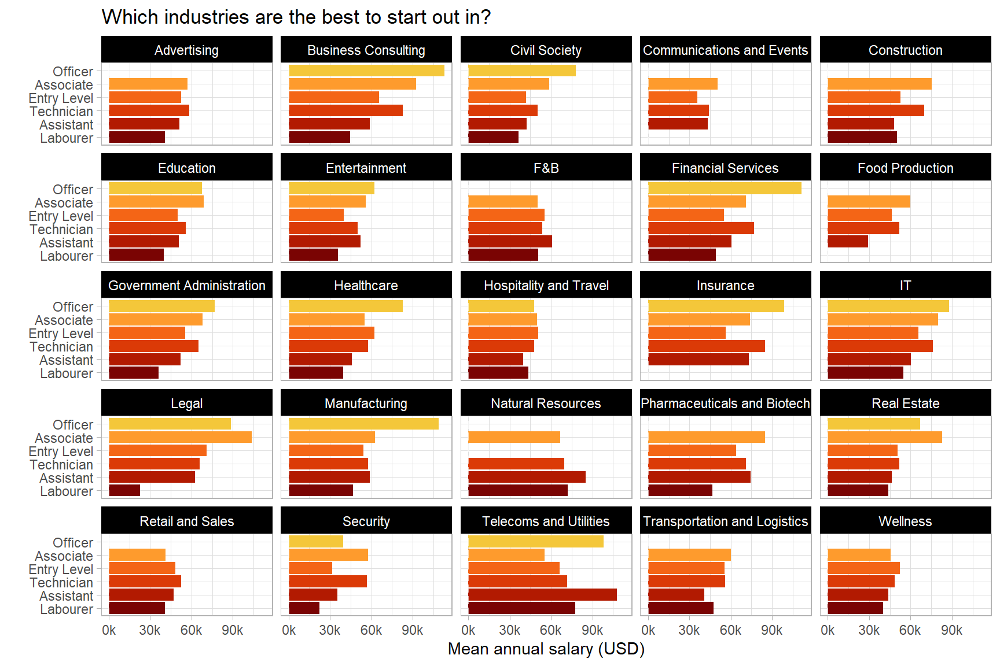
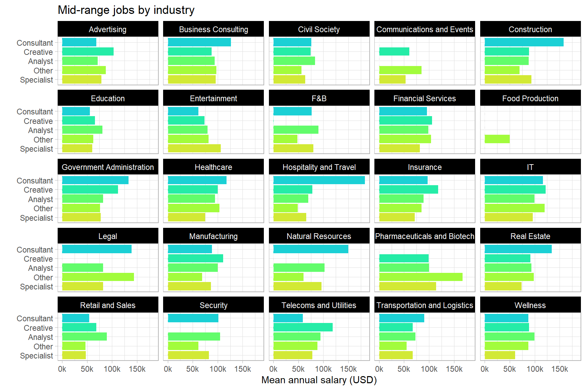
Directors in Education and Civil Society are most lowly-paid out of all industries.
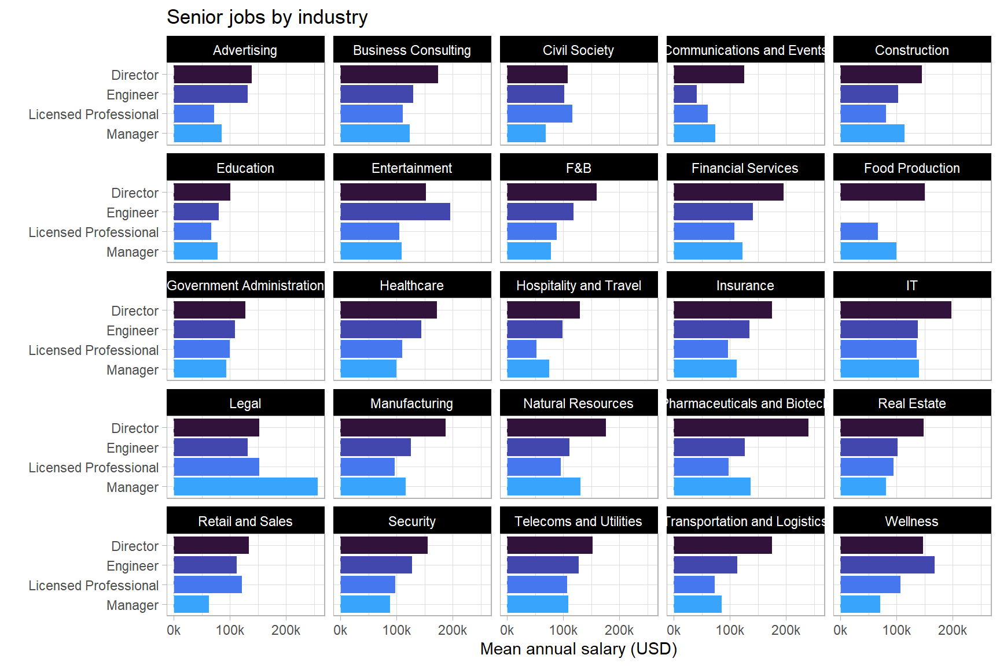